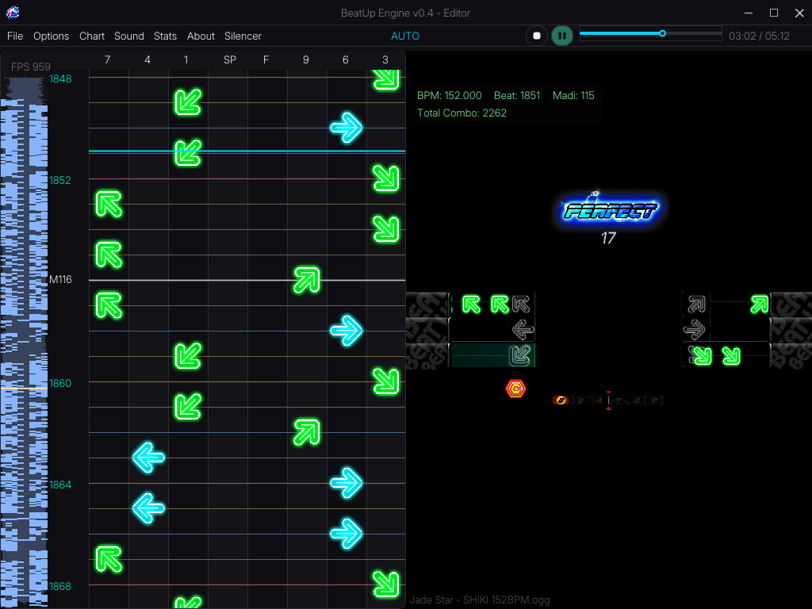

BeatUp Engine
A high-fidelity, open-source BeatUp rhythm game engine built from scratch in C++ with SDL2. Designed to replicate authentic Audition Online / CDIU gameplay mechanics with sub-millisecond timing precision.
Media



About This Engine
The BeatUp Engine is engineered for absolute precision, delivering an authentic rhythm game experience natively on modern Windows systems without the overhead of heavy commercial game engines.
1:1 Timing Engine
Graphics and hit logic now share a single time base, so pressing on the beat lands a true Perfect. Tight, adjustable Perfect window.
Authentic Layout
Numpad 9/6/3 (Right), 7/4/1 (Left), Space, and Numpad 5 for Finish Moves. Includes Mirror & AutoPlay.
Animated Arrows
Moving arrows cycle through per-beat frames just like the original game, with a full-size receptor explosion on hit.
Chart Editor
Timeline canvas with 1/4, 1/8, 1/16 snapping and a color-coded snap grid. Live split-view for real-time AutoPlay review.
.bu Project Files
Save your whole session — audio, notes, position and BPM — and reopen it with a single double-click.
Patcher Chances
Six optional Patcher-only gameplay modifiers: Rapid, Vanishing, Wave, Inverted, Speed Up, and Halfway, with Default remaining unchanged.
Live Duplicate Detection
Same-beat note conflicts are highlighted immediately while editing, with valid finish-note exceptions preserved.
Integrated Tools
Direct Silencer launching and a loading-time GitHub release check improve the overall workflow.
miniaudio Engine
.ogg and .wav support with precise seekMs, adjustable playback speeds, and per-SFX volume control.
Controls & Keybinds
Global Hotkeys
Menu & Patcher
Gameplay (Numpad)
Gameplay (Standard)
Import / Export
Editor & Playback
Chart Editing
Patch Notes (v0.5.1 Stable)
Existing charts, saves and encrypted patcher files from v0.4 remain fully compatible. The 0.7 timing offset default is unchanged and can still be overridden in master.slk.
Timing & Gameplay
- Unified Time Base: Graphics and hit logic now share the same time base. A note pressed while it sits on the receptor registers as a true Perfect — presses no longer feel late.
- Full-Precision Offset: Removed sub-millisecond drift caused by rounding the offset. The
0.7default is preserved as the single tuning value. - Adjustable Windows: Tight Perfect window with wider early Great/Cool/Bad windows so hits open earlier on approach; late windows are shorter as notes fly out after the receptor.
- Smoother Tails: Missed / unpressed notes fly out noticeably longer before fading.
Visuals
- Receptor Beams: MP/RP beams reworked to cover the full lane box per key, aligned to the real receptor rows and mirrored per side.
- Animated Arrows: Moving arrows cycle per-beat frames instead of a single static sprite.
- Explosion:
arrow_explodenow renders at full original size and opacity, matching the Audition BeatUp explosion.
Editor
- .bu Project Files: Save the entire editor state (audio, BPM, offset, position, all notes) and double-click a
.bufile to reopen it with everything restored. - Colored Snap Grid: White for MADI lines, red for 1/4, blue for 1/8, yellow for 1/16 — desaturated for long sessions.
- Toast Notifications: On-screen confirmations for Save / Load / Export actions.
- Import / Export Hotkeys: Direct
.slk/.sscexports next to the audio file; imports open a file browser. The.sscexport now writes BPM and the music filename. - Auto Enter-Chance: New setting to press Enter automatically once the countdown ends. New default judgment volumes (Perfect 120%, Great 70%, Cool 60%, Bad 55%).
- Quality of Life: AutoPlay is ON by default; the redundant top-right score is gone; the scoreboard card is more compact and hidden in Split View so the third arrow stays visible.
- Timeline & Transport: Redesigned timeline slider and restyled Play / Pause / Stop buttons.
Fixes
- Fixed inconsistent offset handling that caused an off-beat feel.
- Fixed MP/RP beams rendering as an oversized block, in the wrong position, or on the wrong side.
- Fixed the receptor-beam overshoot past the lane box and the right-side gap.
- Fixed
arrow_explodescaling and coverage. - Fixed the timeline slider rendering artifacts.
- Fixed the settings overlay that could not be closed.
- Fixed the score showing in Split View and covering the third arrow.
Roadmap
Future development for the BeatUp Engine and its supporting tools.
Timing & Audio Tools
Further improvements to timing analysis, audio handling, BPM detection, and precise offset workflows.
Editor Quality of Life
More diagnostics, visual helpers, and workflow improvements for chart creation and review.
Patcher Expansion
More optional gameplay modifiers while keeping Default behaviour unchanged.
Distribution & Updates
Further improvements to release packaging, version checks, and update workflows.
System & Development
System Requirements
Build Dependencies (For Developers)
- CMake (Version 3.15 or higher)
- Visual Studio with C++ desktop development workload (MSVC)
- SDL2 and SDL2_image development libraries
- miniaudio (integrated for audio playback)
- Dear ImGui (integrated for graphical user interface rendering)